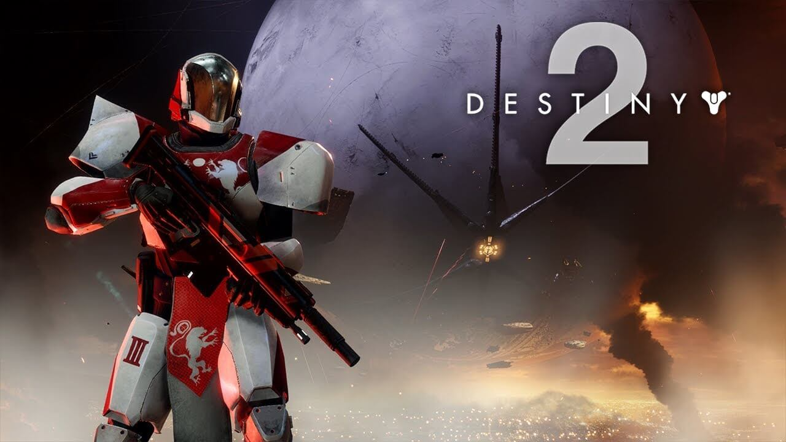
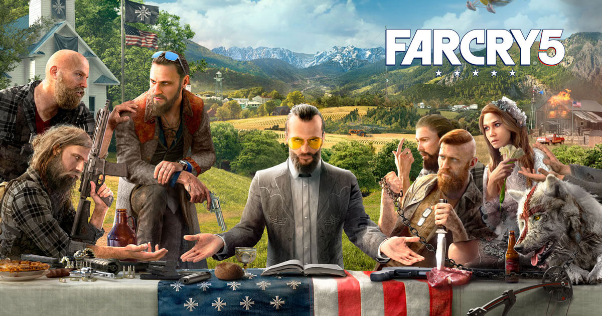
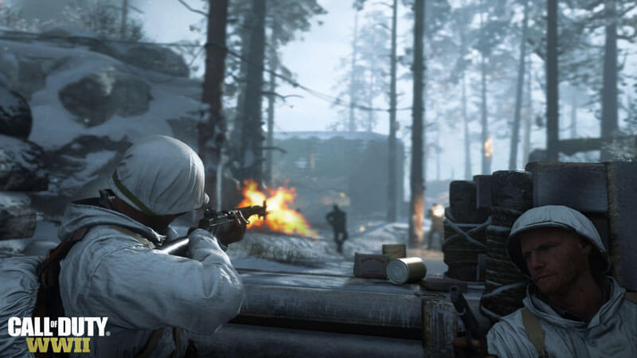
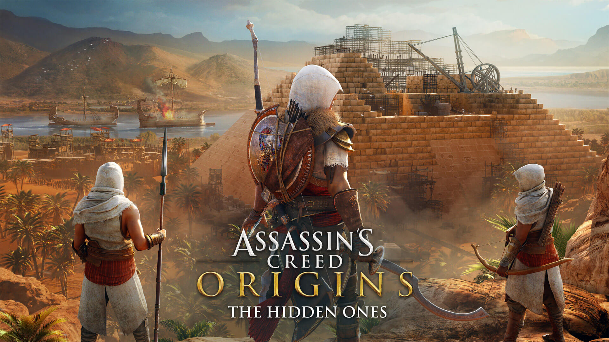
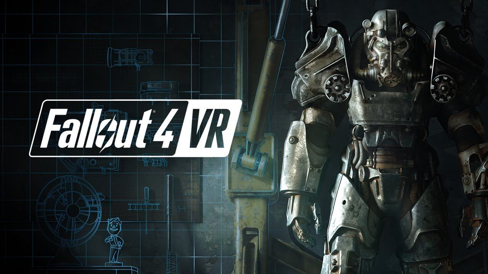
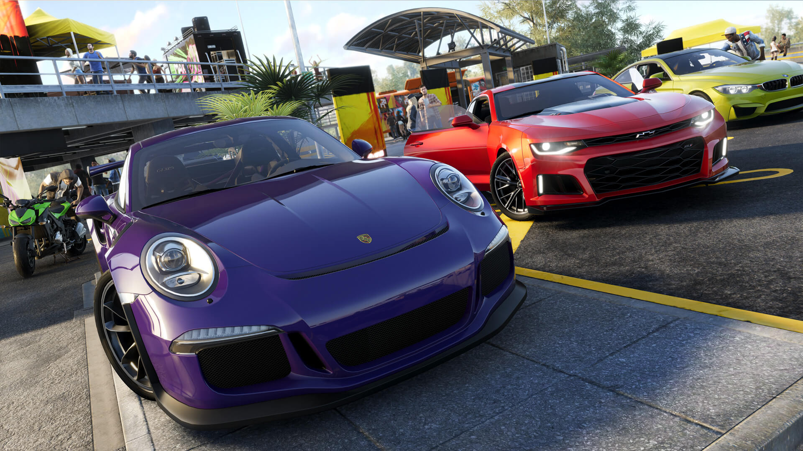

Quarto
GEEK
Início
Contato
Doações
GESHOP
Sobre
-Games-
Jogos em Geral
Notícias e Curiosidades sobre o mundo dos Games e E-Sports
Gran Turismo
Gran Turismo Sport - Gameplay
Escrito por: C. Magno
Publicado em 21/10/2017
O novo Gran Turismo Sport saiu à poucos dias atrás, então por que não curtir o gameplay?
fonte:
EnemyPlay
Destiny 2
'Destiny 2' planeja inspirar a cooperação
Escrito por: C. Magno
Publicado em 21/10/2017
Segundo os criadores, a sequência da franquia de jogos Destiny, game voltado para FPS e RPG terá maior foco no companherismo e cooperação.
"Queremos construir um mundo que inspire o companheirismo. Seja com um clã que está introduzindo novos jogadores nas atividades mais difíceis. Seja com um bando de gente dançando junto depois de um evento público. Existem muitas oportunidades para cooperação, interações sociais e expressões de criatividade", afirma David Dague, da Bungie.
fonte:
G1
Top Games 2017
Top Games de 2017
Escrito por: C. Magno
Publicado em 21/10/2017
#01 - Destiny 2

#02 - Far Cry 5

#03 - Call of Duty: WWII

#04 - Wolfenstein II: The New Colossus
#05 - The Evil Within 2
#06 - Assassin's Creed: Origins

#07 - LEGO® Marvel Super Heroes 2
#08 - Fallout 4 VR

#09 - Star Wars Battlefront II
#10 - The Crew 2

fonte:
GreenManGaming